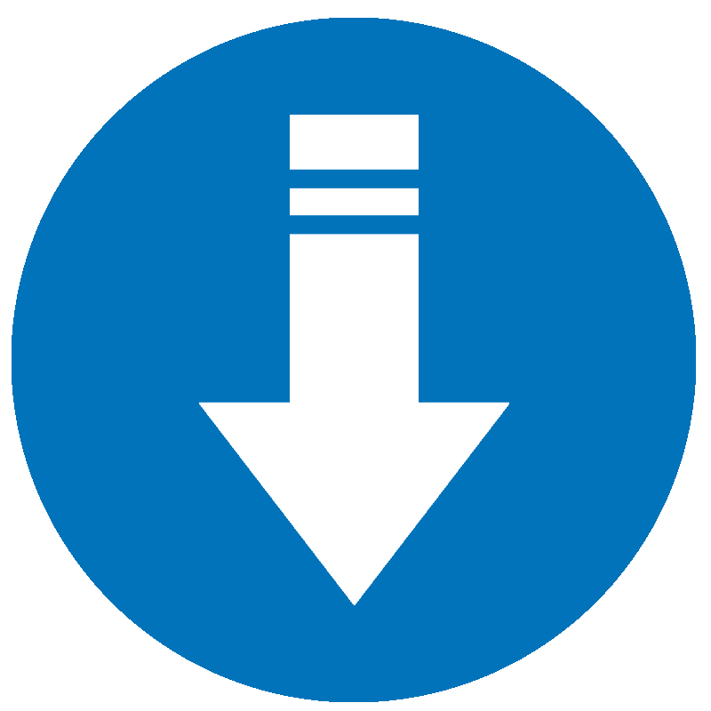

海外仓-退仓换标
一、海外仓退仓换标
海外仓退仓换标，基本上是所有跨境电商卖家都会接触到的。一旦产品遭到用户退货、 LISTING审核不合格或无效、商品被告侵权，账号被封等等一些情况的时候，就需要用到海外仓退仓换标这一服务。
跨境电商卖家把这些无质量问题的产品运到海外仓后，海外仓仓库会安排人员进行换标处理， 重新打包，这样可以让产品重新再次获得价值及上架平台销售的机会，避免货物损失，从而节省成本。

二、极速退仓换标优势
-
 经验丰富
七年海外仓运营经验，熟悉亚马逊入库要求，懂跨境电商卖家诉求
经验丰富
七年海外仓运营经验，熟悉亚马逊入库要求，懂跨境电商卖家诉求 -
 价格公正
换标服务报价合理清晰透明，没有隐性收费
价格公正
换标服务报价合理清晰透明，没有隐性收费 -
 一货多销
可对接所有主流电商平台，支持多渠道发货
一货多销
可对接所有主流电商平台，支持多渠道发货 -
沟通无忧在美华人操作，直接对接仓库，无合作扯皮烦恼
三、极速退仓换标流程

电商卖家在Amazon后台建立移除订单，把需要换标的产品发到极速海外仓
仓库接收包裹，登记到货信息，反馈给电商卖家
电商卖家根据反馈的到货信息，下达指令给仓库
仓库根据指令对货品进行处理
换标处理完后装箱，回传装箱数据给卖家
电商卖家根据装箱单在Amazon创建发货计划，并提供箱唛
仓库将货品发回FBA，退仓换标流程完成
四、退仓换标常见问题
-
 哪些退货商品可以进行退仓换标处理？
哪些退货商品可以进行退仓换标处理？
-
 不是因为产品本身质量问题而影响销售的，比如产品标签损坏、产品包装破损、客户无条件退换的产品、
滞销产品、残次品难界定的、店铺关闭、产品转移等，这些产品都可以通过换标后再次进行销售。
不是因为产品本身质量问题而影响销售的，比如产品标签损坏、产品包装破损、客户无条件退换的产品、
滞销产品、残次品难界定的、店铺关闭、产品转移等，这些产品都可以通过换标后再次进行销售。
-
海外仓可以解决FBA退换货的问题吗？
-
可以，因为亚马逊是支持客户无条件退换货的。第三方海外仓针对不是因为质量问题退回来的产品，
替卖家更换标签或者重新包装，然后再次进行销售，可以减少卖家的损失。
-
退仓换标的产品仅支持亚马逊销售吗？
-
不是的。在海外仓进行换标的产品，一般而言也是支持在其他的电商平台上进行销售的。如果是极速海外仓提供的换标服务，
换标后的产品除了可以在亚马逊上销售之外，还支持其他平台的销售，我们是支持全渠道发货的例如沃尔玛，Wayfair等。